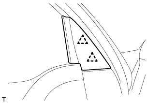
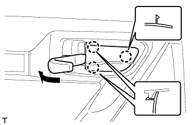
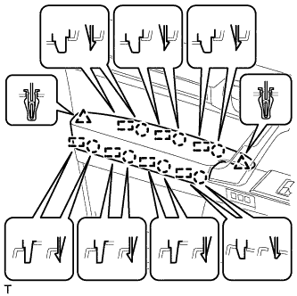
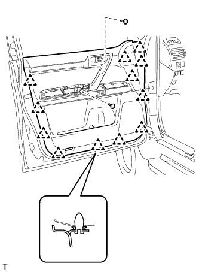
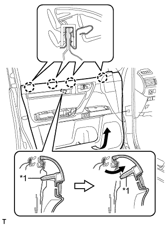
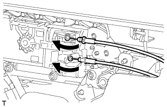
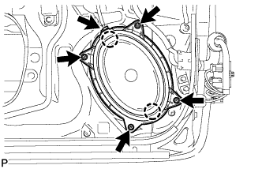

FRONT DOOR SPEAKER > REMOVAL |
| 1. DISCONNECT CABLE FROM NEGATIVE BATTERY TERMINAL |
| Condition | Waiting Time |
| Vehicle enrolled in G-BOOK system | 6 minutes |
| Vehicle not enrolled in G-BOOK system | 1 minute |
| 2. REMOVE FRONT DOOR LOWER FRAME BRACKET GARNISH LH |
|  |
Detach the 2 clips and remove the front door lower frame bracket garnish LH.
| 3. REMOVE FRONT DOOR INSIDE HANDLE BEZEL PLUG LH |
|  |
Using a moulding remover, detach the 3 claws and remove the inside handle bezel as shown in the illustration.
| 4. REMOVE FRONT ARMREST ASSEMBLY LH |
|  |
Using moulding remover B, detach the 7 claws and 7 guides, and remove the front armrest assembly as shown in the illustration.
| 5. REMOVE FRONT DOOR TRIM BOARD SUB-ASSEMBLY LH |
|  |
Remove the 2 screws.
Remove the 12 clips.
|  |
Pull out the front door trim board sub-assembly in the direction indicated by the arrow in the illustration.
| *1 | Reference Boss |
Raise the front door trim board sub-assembly to detach the 4 claws and remove the front door trim board sub-assembly together with the front door inner glass weatherstrip LH.
Disconnect the 2 connectors.
|  |
Disconnect the front door lock remote control cable assembly and front door inside locking cable assembly.
| 6. REMOVE FRONT DOOR INNER GLASS WEATHERSTRIP LH |
 |
Using a screwdriver, detach the 4 claws and remove the front door inner glass weatherstrip from the front door trim board sub-assembly as shown in the illustration.
| 7. REMOVE FRONT NO. 1 SPEAKER ASSEMBLY |
|  |
Disconnect the speaker connector.
Remove the 4 screws.
Detach the 2 claws and remove the speaker.